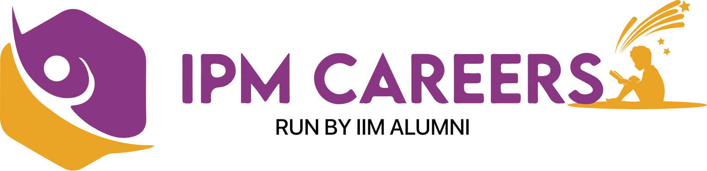

<!doctype html><html><head><meta charset="utf-8">
<!-- Real-photo poster (1080x1350): ?img= (photo path) . Editorial headline + rubber stamp. Photos of real people stay out of git (out/). -->
<style>
@font-face { font-family: Inter; src: url(../../public/fonts/inter.woff2); font-weight: 100 900; }
@font-face { font-family: Fraunces; src: url(../../public/fonts/fraunces.woff2); font-weight: 100 900; }
@font-face { font-family: FrauncesI; src: url(../../public/fonts/fraunces-italic.woff2); font-weight: 100 900; }
*{box-sizing:border-box;margin:0;padding:0}
html,body{width:1080px;height:1350px;overflow:hidden;background:#eee}
.ph{position:absolute;inset:0;background-size:cover;background-position:50% 70%;filter:contrast(1.04) saturate(1.05)}
.grain{position:absolute;inset:0;opacity:.10;mix-blend-mode:multiply}
h1{position:absolute;left:64px;top:96px;width:600px;font:500 76px/1.02 Fraunces;letter-spacing:-1.5px;color:#14110F}
h1 i{font-family:FrauncesI;font-style:italic;color:#7A2E74}
.k{position:absolute;left:66px;top:62px;font:700 20px Inter;letter-spacing:.2em;color:#5b5550}
.stamp{position:absolute;left:58px;bottom:150px;width:300px;height:300px;border-radius:50%;border:7px solid rgba(196,38,38,.88);color:rgba(196,38,38,.9);transform:rotate(-12deg);display:flex;flex-direction:column;align-items:center;justify-content:center;text-align:center;mix-blend-mode:multiply}
.stamp:before{content:"";position:absolute;inset:12px;border-radius:50%;border:3px solid rgba(196,38,38,.75)}
.stamp b{font:900 96px/1 Inter;letter-spacing:-3px}
.stamp span{font:800 17px/1.3 Inter;letter-spacing:.12em;margin-top:8px}
.foot{position:absolute;left:0;right:0;bottom:0;padding:26px 64px 30px;background:linear-gradient(rgba(20,17,15,0),rgba(20,17,15,.78) 40%);color:#fff;font:500 25px/1.45 Inter}
.foot b{color:#FFD27A}
</style></head><body>
<script>
const q=new URLSearchParams(location.search);
document.body.innerHTML=`<div class="ph" style="background-image:url(${q.get("img")})"></div>
<svg class="grain" width="1080" height="1350"><filter id="n"><feTurbulence type="fractalNoise" baseFrequency=".85" numOctaves="2"/><feColorMatrix values="0 0 0 0 .5 0 0 0 0 .5 0 0 0 0 .5 0 0 0 .6 0"/></filter><rect width="100%" height="100%" filter="url(#n)"/></svg>
<div class="k">IIM B UGAT 2026 · THE INTERVIEW ROUND</div>
<h1>Rehearse the interview <i>before</i> it counts.</h1>
<div class="stamp"><b>₹99</b><span>UNLIMITED<br>MOCK INTERVIEWS</span></div>
<div class="foot">Mock panels by alumni of <b>IIM A · IIM B · IIM L · IIM Shillong</b><br>The interview is 40 of 100 at IIMB · Interview Prep Batch · link in bio</div>
`;
</script></body></html>
